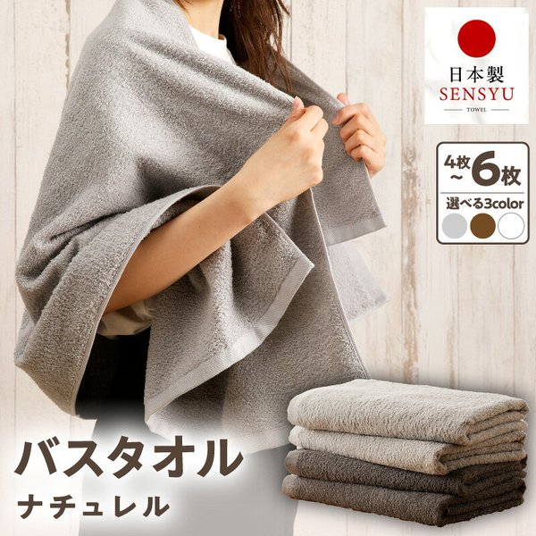
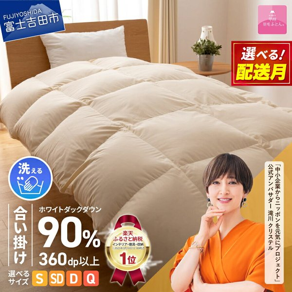
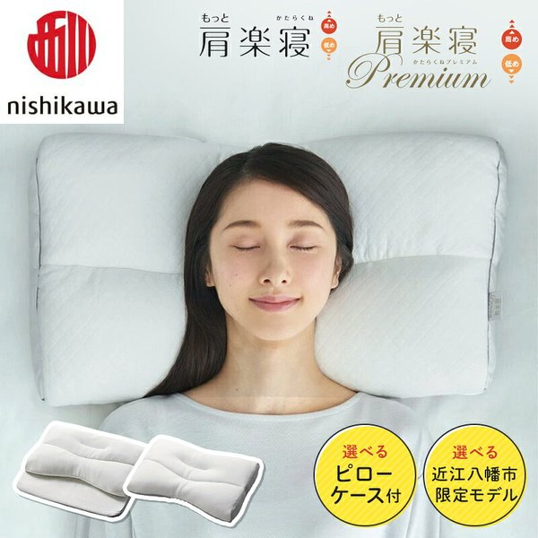
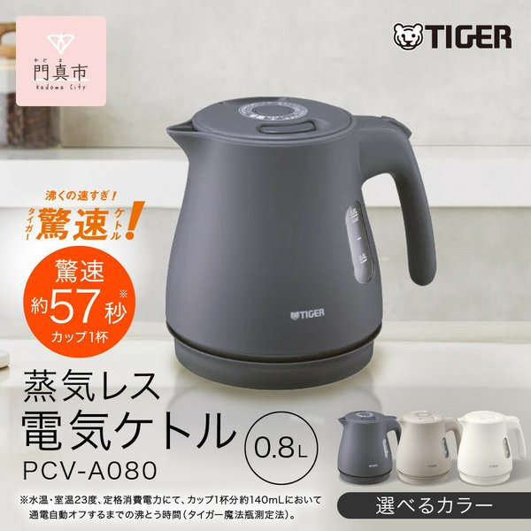
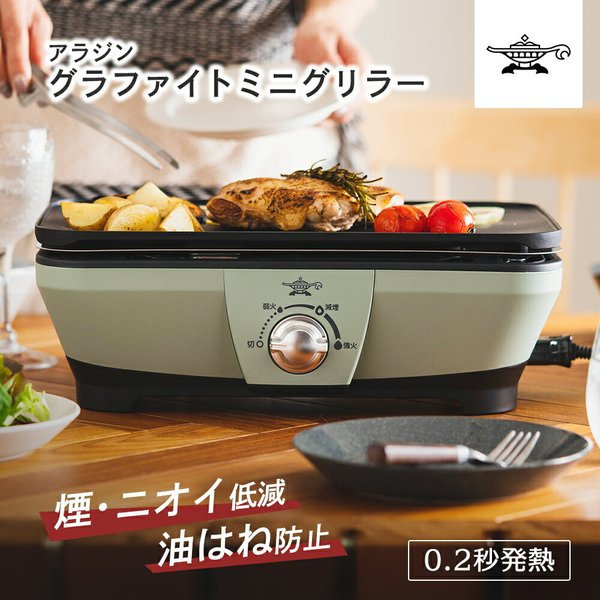
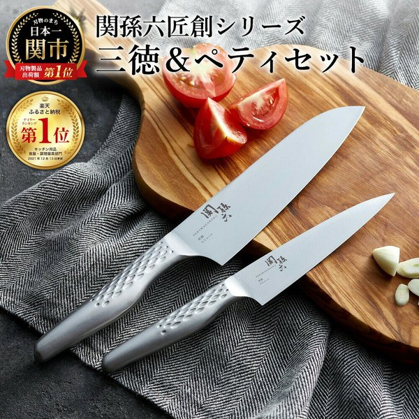
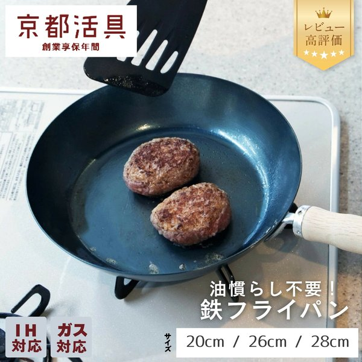
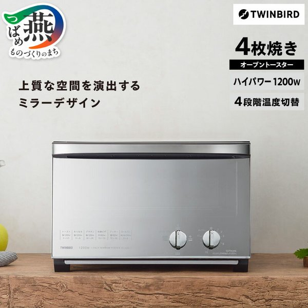
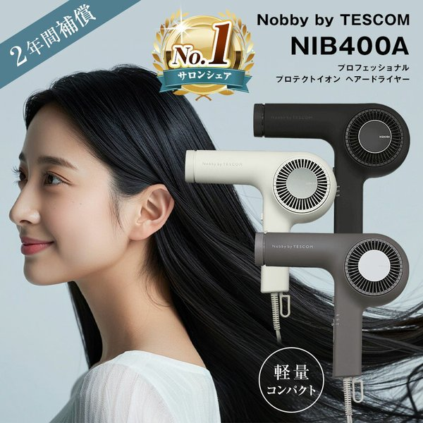

【2026年ふるさと納税】家電・今治タオル・羽毛布団・キッチン用品まで！暮らしの質が上がる人気日用品・生活雑貨返礼品10選
ふるさと納税は、食べ物ばかり選んでいると「今年も肉と米だけだった」となりがちです。けれど、毎日使うタオルや布団、包丁、ケトルのような日用品こそ、返礼品で受け取ると効果が長く続きます。
選ぶ軸は、毎日使うか、壊れたら買い替えるものか、そしてサイズや色を選べるかの3つです。タオルは洗濯を重ねるほど良さが出るので、6色から選べて枚数も調整できる返礼品なら、家族の人数に合わせて揃えられます。羽毛布団や枕は、サイズと高さを選べるものが失敗しにくく、配送月を指定できると収納場所の確保も楽になります。キッチン用品は、包丁やフライパンのように「一度買うと10年使う」ものを返礼品にすると、寄附の効果がいちばん長く残ります。家電は、電気ケトルやトースターのように毎朝使うものから選ぶと、届いた日から生活が変わります。
本記事では、楽天市場の自治体ショップから届く日用品・生活雑貨の返礼品10選を、寄附額とレビュー評価つきで写真付き紹介します。
- おすすめ10選 スペック・特徴比較表
- BEST 1｜今治タオル ふわふわ 贅沢 フェイスタオル 3〜12枚セット（6色）
- BEST 2｜泉州タオル バスタオル ナチュレル 4枚／6枚セット（約60×122cm・綿100%）
- BEST 3｜羽毛合い掛けふとん ホワイトダックダウン90%（シングル〜クイーン・洗える）
- BEST 4｜医師がすすめる健康枕 もっと肩楽寝（高さが選べる・日本製）
- BEST 5｜蒸気レス電気ケトル PCV-A080（0.8L・3色）
- BEST 6｜グラファイト ミニグリラー CAG-MG7A（グリーン）
- BEST 7｜オールステンレス「匠創」三徳包丁165mm＆ペティナイフ120mmセット
- BEST 8｜IH・ガス火対応 鉄フライパン（20cm／26cm／28cm）
- BEST 9｜ミラーガラスオーブントースター TS-4047W（4枚焼き）
- BEST 10｜Nobby by TESCOM プロフェッショナル ドライヤー NIB400
- 【読者負担0円】買わなくても得する無料サービス
- まとめ：暮らしの質が上がる返礼品10選の選び方
| 順位 | 商品名 | ブランド | 最大の特徴・おすすめ理由 | 総合評価 |
|---|---|---|---|---|
| BEST 1 | 今治タオル ふわふわ 贅沢 フェイスタオル 3〜12枚セット（6色） | ヒオリエ | 6色から色を選べる | 4.79 |
| BEST 2 | 泉州タオル バスタオル ナチュレル 4枚／6枚セット（約60×122cm・綿100%） | ナチュレル | 日本製・綿100%の泉州タオル | 4.42 |
| BEST 3 | 羽毛合い掛けふとん ホワイトダックダウン90%（シングル〜クイーン・洗える） | 甲州羽毛ふとん | ホワイトダックダウン90%・ダウンパワー360以上 | 4.83 |
| BEST 4 | 医師がすすめる健康枕 もっと肩楽寝（高さが選べる・日本製） | 西川（nishikawa） | 高さを「高め／低め」から選べる | 4.62 |
| BEST 5 | 蒸気レス電気ケトル PCV-A080（0.8L・3色） | タイガー魔法瓶 | 蒸気が出ないので置き場所を選ばない | 4.85 |
| BEST 6 | グラファイト ミニグリラー CAG-MG7A（グリーン） | アラジン（Aladdin） | 0.2秒で発熱するグラファイトヒーター | 4.16 |
| BEST 7 | オールステンレス「匠創」三徳包丁165mm＆ペティナイフ120mmセット | 関孫六（貝印） | 三徳165mm＋ペティ120mmの2本セット | 4.39 |
| BEST 8 | IH・ガス火対応 鉄フライパン（20cm／26cm／28cm） | 京都活具 | 油慣らし不要ですぐ使える | 4.69 |
| BEST 9 | ミラーガラスオーブントースター TS-4047W（4枚焼き） | ツインバード | 食パン4枚を同時に焼ける | 4.80 |
| BEST 10 | Nobby by TESCOM プロフェッショナル ドライヤー NIB400 | TESCOM（テスコム） | イオンの2モードから選べる | 4.63 |
今治タオル ふわふわ 贅沢 フェイスタオル 3〜12枚セット（6色）

今治産のフェイスタオルを、3枚から12枚までのセットで選べる返礼品です。色はオフホワイト、ライトブラウン、ミストグレー、アクア、モスピンク、チャコールの6色から選べ、同じ色で揃えられます。パイルがふんわり立つ仕上げで、洗濯を重ねるほど肌になじみます。家族の人数が決まっている家なら、12枚セットでしばらくタオルを買い足さずに済みます。寄附額は約13,000円（2026年11月時点）。
- 6色から色を選べる
- 3〜12枚まで枚数を選べる
- レビュー668件・評価4.79の定番
- 12枚セットでも寄附額は13,000円なので、まずは必要な枚数から始める
泉州タオル バスタオル ナチュレル 4枚／6枚セット（約60×122cm・綿100%）

大阪・泉佐野市の泉州タオルから、バスタオル「ナチュレル」を4枚または6枚で届ける返礼品です。約60×122cmの標準サイズで、綿100%のやわらかな肌触り。泉州タオルは吸水が早く乾きやすいのが特徴で、部屋干しが増える冬にも扱いやすいです。敏感肌の家族にも使いやすいとされる生地で、洗濯を繰り返してもごわつきにくい仕上げです。寄附額は約11,000円（2026年11月時点）。
- 日本製・綿100%の泉州タオル
- 4枚／6枚から枚数を選べる
- 乾きやすいので部屋干しに向く
- レビューは271件なので、色の好みは写真で確認しておく
羽毛合い掛けふとん ホワイトダックダウン90%（シングル〜クイーン・洗える）

山梨県富士吉田市の返礼品で、世界遺産・富士山の麓で作られた羽毛合い掛けふとんです。中身はホワイトダックダウン90%を800g（シングル）使い、ダウンパワーは360以上。エクセルゴールドラベルを取得した製品で、手洗いもできます。合い掛けの中厚タイプなので、秋から春までのスリーシーズン使え、気密性の高いマンションなら真冬でもこの厚みで足ります。サイズは4種類、配送月も選べます。寄附額は約58,000円（2026年11月時点）。
- ホワイトダックダウン90%・ダウンパワー360以上
- サイズ4種類と配送月を選べる
- 手洗いできるので清潔に保てる
- レビューは2,099件だが、羽毛は天然素材のため届いた直後に独特のにおいがすることがある
医師がすすめる健康枕 もっと肩楽寝（高さが選べる・日本製）

寝具メーカー西川の健康枕を、滋賀県近江八幡市から届ける返礼品です。高さを「高め」「低め」から選べるので、肩幅や寝姿勢に合わせて調整できます。首と肩のすき間を埋める形状で、仰向けでも横向きでも頭が沈み込みにくい設計。カバーは洗濯でき、プレミアムタイプも選べます。枕が合わずに朝を迎えるのがつらい人ほど、試す価値のある1品です。寄附額は約22,000円（2026年11月時点）。
- 高さを「高め／低め」から選べる
- 日本製で洗濯できる
- レビュー351件・評価4.62
- 高さの好みは人によって違うので、今使っている枕の高さを測ってから選ぶ
蒸気レス電気ケトル PCV-A080（0.8L・3色）

大阪府門真市の返礼品で、タイガー魔法瓶の蒸気レス電気ケトルを届けます。蒸気を外に出さない構造なので、壁や吊り戸棚の近くに置いても蒸気で傷めにくいのが利点です。容量は0.8Lで、カップ2杯ぶんの湯を約57秒で沸かせると謳う速沸設計。カラーはナイトブラック、アーバンベージュ、マットホワイトの3色から選べます。寄附額は約21,000円（2026年11月時点）。
- 蒸気が出ないので置き場所を選ばない
- 0.8Lで毎日の湯沸かしに十分
- 3色から選べる
- レビューは27件とまだ少なく、口コミはこれから増える段階
グラファイト ミニグリラー CAG-MG7A（グリーン）

兵庫県加西市の返礼品で、アラジンのグラファイトミニグリラーを届けます。グラファイトヒーターは電源を入れて0.2秒で発熱するため、焼き始めの待ち時間がほとんどありません。上下の遠赤外線で焼くので、肉の表面は香ばしく、中は水分が残ります。煙とにおいを抑える構造で、油はねも受け止めるトレー付き。卓上で焼肉や焼き鳥を楽しみたい家庭に向いています。寄附額は約45,000円（2026年11月時点）。
- 0.2秒で発熱するグラファイトヒーター
- 煙・においを抑える構造
- 油はねを受け止めるトレー付き
- レビューは37件と少なく、4〜5人で使うには庫内が小さい
オールステンレス「匠創」三徳包丁165mm＆ペティナイフ120mmセット

岐阜県関市の返礼品で、貝印・関孫六のオールステンレス包丁2本セットを届けます。三徳包丁165mmとペティナイフ120mmの組み合わせで、肉・魚・野菜の下ごしらえと、果物や小さな食材の皮むきをこれ2本で済ませられます。柄まで一体型のステンレス製なので、すき間がなく汚れが溜まりにくく、食洗機にも対応します。セラミックシャープナー付きのセットも選べます。寄附額は約22,000円（2026年11月時点）。
- 三徳165mm＋ペティ120mmの2本セット
- 一体型ステンレスで衛生的
- 食洗機に対応
- レビューは193件と中程度なので、研ぎ直しの頻度は使う量に合わせる
IH・ガス火対応 鉄フライパン（20cm／26cm／28cm）

京都市の返礼品で、京都活具の鉄フライパンを届けます。鉄は熱伝導がよく、強火で一気に焼くと肉の表面に香ばしい焼き目が付きます。この製品は「油慣らし不要」で、届いたその日から洗って焼くだけで使えるのが特徴です。IHとガス火の両方に対応し、20cm・26cm・28cmからサイズを選べます。テフロン加工のフライパンを数年で買い替えている人ほど、長く使える鉄に替える価値があります。寄附額は約10,000円（2026年11月時点）。
- 油慣らし不要ですぐ使える
- IH・ガス火の両対応
- 20／26／28cmから選べる
- レビューは162件と中程度で、鉄は使うたびに油をなじませる手入れが要る
ミラーガラスオーブントースター TS-4047W（4枚焼き）

新潟県燕市の返礼品で、ツインバードのミラーガラスオーブントースターを届けます。食パンを4枚同時に焼ける庫内で、ハイパワー1200Wと4段階の温度切替を備えています。ミラーガラスの扉は庫内の熱を逃がしにくく、焼きムラが出にくいのが利点。キッチンに置いたときの見た目もすっきりして、来客時にもそのまま出せます。寄附額は約33,000円（2026年11月時点）。
- 食パン4枚を同時に焼ける
- 1200W・4段階の温度切替
- ミラーガラスで焼きムラが出にくい
- レビューは45件と少なく、庫内が広いぶん外寸も大きい
Nobby by TESCOM プロフェッショナル ドライヤー NIB400

長野県松本市の返礼品で、TESCOMのプロフェッショナル向けドライヤー「Nobby」を届けます。プロテクトイオンとトライバランスイオンの2つのモードから選べ、乾かしながら髪の広がりを抑えたい人に向いています。風量がありながら本体はコンパクトで、浴室のフックに掛けておけます。カラーも選べるので、洗面所の雰囲気に合わせられます。寄附額は約43,000円（2026年11月時点）。
- イオンの2モードから選べる
- 大風量で乾かす時間が短い
- コンパクトで置き場所に困らない
- レビューは112件で、上位機種より軽さを優先した設計のため長時間の連続使用には向かない
この記事の商品を買う前に、まずは無料で得する選択肢をチェック。どれも登録・利用は0円で、無料期間中に解約すれば料金はかかりません。読みたい雑誌がある人、ポイントを貯めたい人、アンケートなら気軽という人、それぞれに合うものを選べます。
初回31日無料・無料期間中に解約すれば0円 → 楽天ポイントモール｜登録無料で毎日ポイ活
買い物なしでもポイントが貯まる無料サービス → 楽天インサイト｜アンケートに答えてポイント
登録無料・すきま時間のアンケートで貯まる → 楽天カード｜年会費永年無料
新規発行・年会費ずっと0円 →
4つのサービスの違いと使い分けは「出費0円で得する！買わずにポイントが貯まる無料サービス厳選4選」でまとめています。
💡 まとめ：暮らしの質が上がる返礼品10選の選び方
日用品の返礼品は、届いた瞬間の華やかさはありませんが、使うたびに「これ返礼品でもらった」と思い出せるのが強みです。まずはタオルや布団のように、家族全員が毎日使うものから選んでください。次に、包丁やフライパンのように、良いものを一度買えば長く使える道具を足します。家電は、電気ケトルやトースターのように毎朝必ず使うものから選ぶと、寄附の効果を実感しやすいです。羽毛布団は配送月を選べる返礼品にすると、収納場所が空いてから受け取れます。枕は高さを選べるものを選び、今使っている枕の高さを測ってから寄附すると失敗しません。寄附額は商品によって大きく違うので、欲しいものの相場を先に調べ、還元率だけで決めないことが大切です。
楽天市場では「5と0のつく日」や「お買い物マラソン」などのキャンペーンに合わせて購入すると、ポイント還元が最大化してお得に手に入ります。ぜひチェックしてみてくださいね。